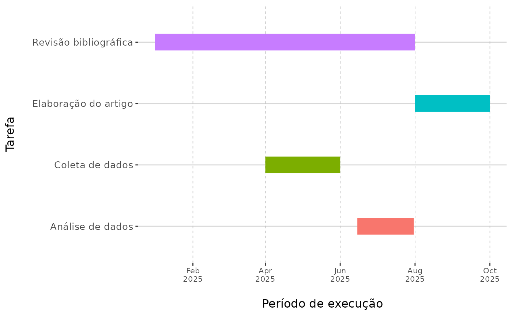
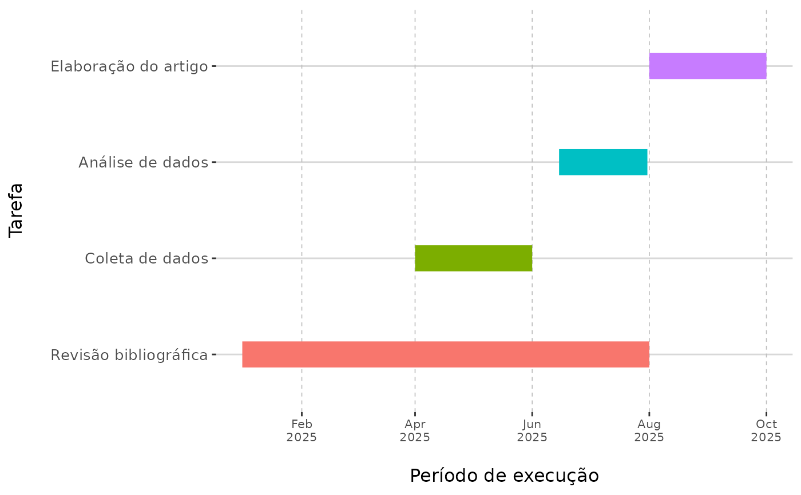
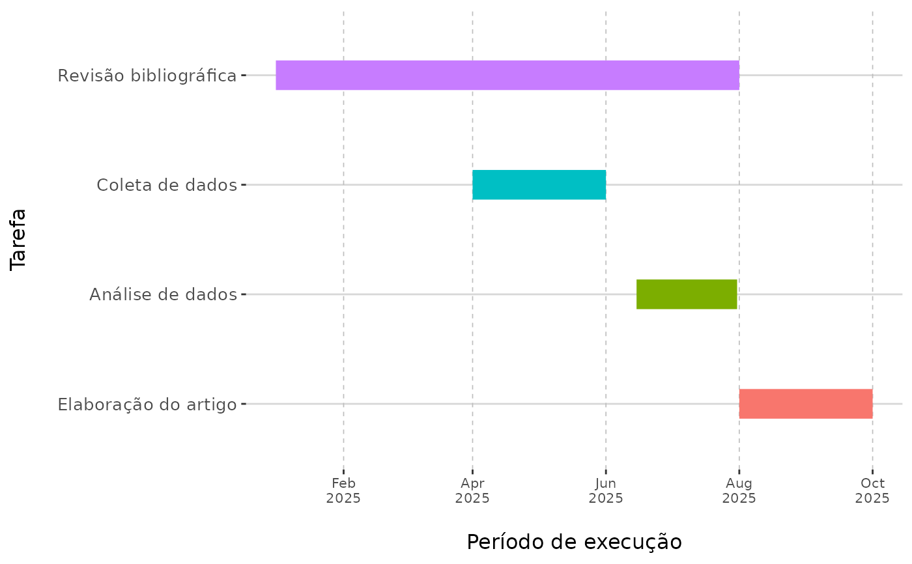
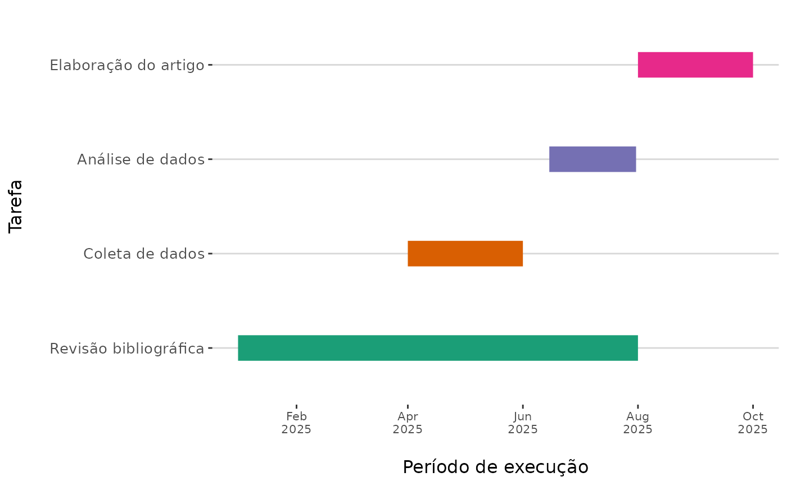
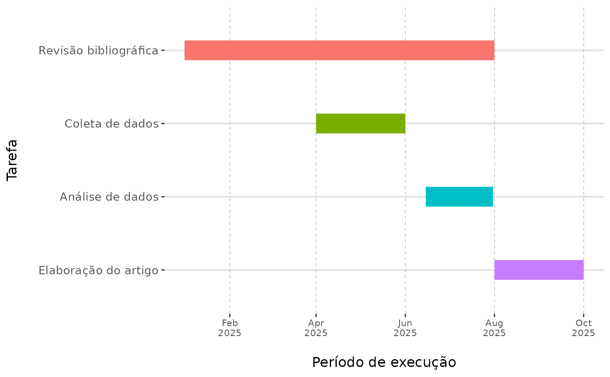
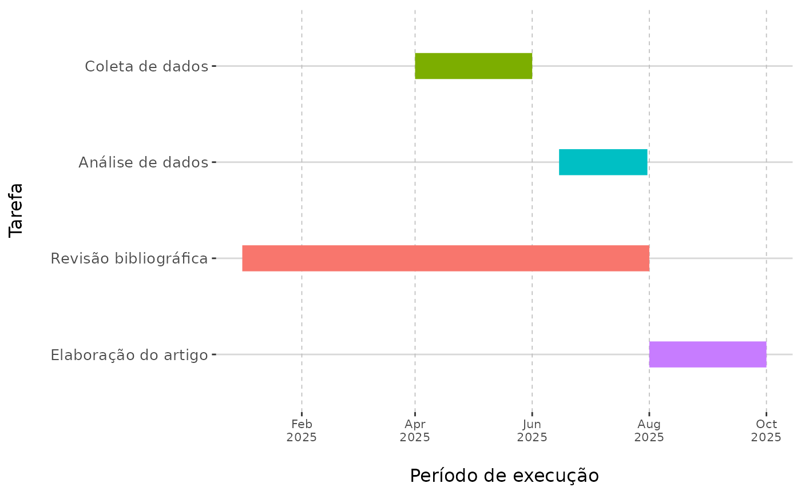
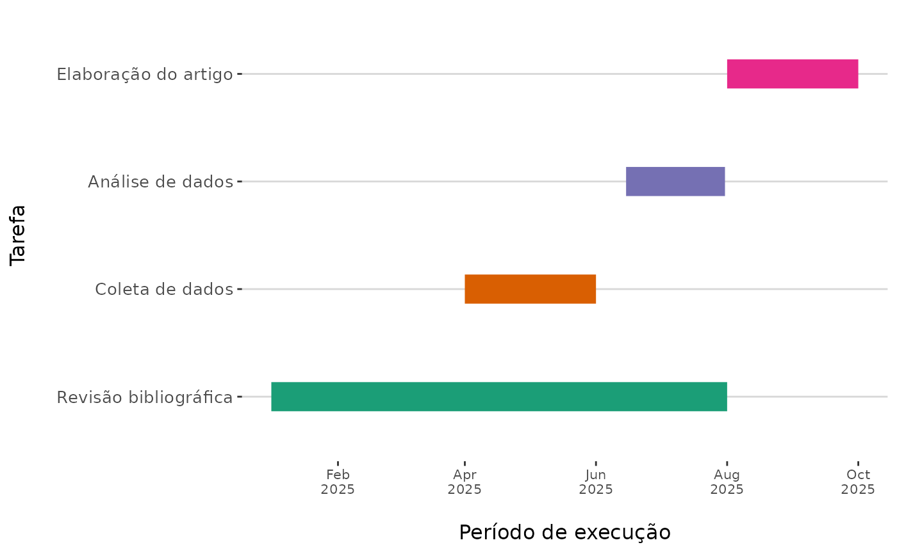
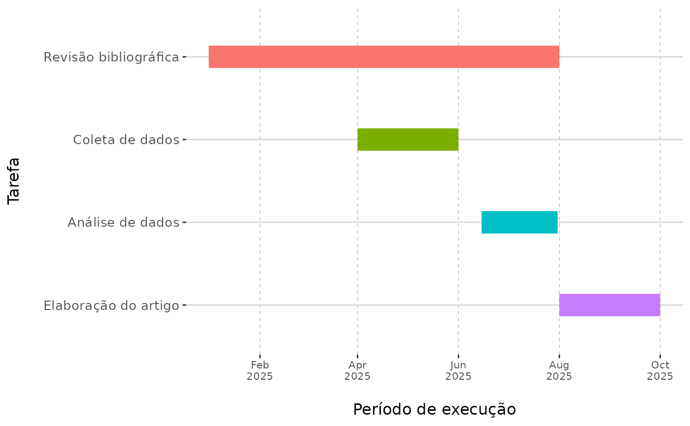
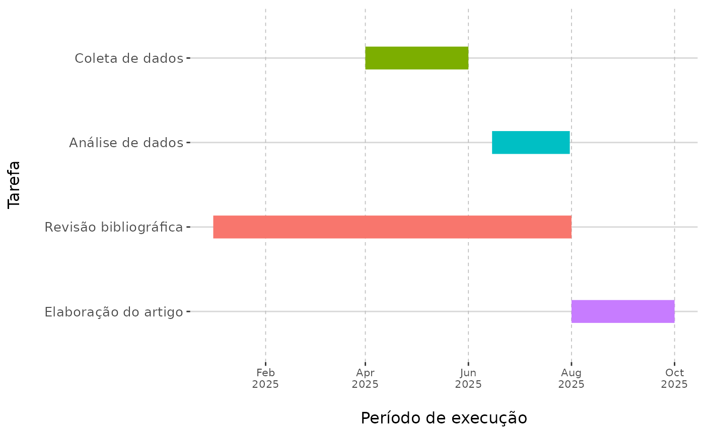

Cronograma
calendas.RdDesenha um Diagrama de Gantt representando um cronograma de tarefas.
Usage
calendas(
banco,
tarefa = tarefa,
inicio = inicio,
fim = fim,
paleta = NULL,
ttexto.data = 8,
ttexto.tarefa = 10,
gradevert = TRUE,
breaks = 2,
ordenar_por = NULL,
ordem_desc = TRUE,
xlab = NULL,
ylab = NULL,
titulo = NULL
)Arguments
- banco
Banco de dados contendo as variáveis com informação sobre a tarefa, sua data de início e fim. Objeto da classe
data.frame.- tarefa
Nome da variável com a tarefa. Deve ir sem aspas. Padrão é `tarefa`.
- inicio
Nome da variável com a data de início da tarefa. Padrão é `inicio`.
- fim
Nome da variável com a data de fim da tarefa.Padrão é `fim`.
- paleta
Paleta de cores para o gráfico. Pode ser "Set1", "Set2", "Set3", "Dark2", "Paired", "Pastel1", "Pastel2", "Accent".
- ttexto.data
Tamanho do texto para as datas (eixo x).
- ttexto.tarefa
Tamanho do texto para as tarefas (eixo y).
- gradevert
O diagrama deve apresentar linhas verticais, para melhor identificação da data? O padrão é
TRUE.- breaks
Intervalo de espaçamento para a apresentação da data, em meses. O padrão é 2.
- ordenar_por
Ordena por uma variável numérica presente no banco, como a data de início ou fim da tarefa. O padrão é
NULL.- ordem_desc
Se ordenado por alguma variável em
ordenar_por, a ordem deve ser descendente? O padrão éTRUE.- xlab
Rótulo para o eixo x (datas). Padrão é "Período de execução".
- ylab
Rótulo para o eixo y (tarefas). Padrão é "Tarefa".
- titulo
Título para o gráfico. Padrão é
NULL.
Examples
tarefa <- c("Revisão bibliográfica", "Coleta de dados", "Análise de dados", "Elaboração do artigo")
inicio <- as.Date(c("2025-01-01", "2025-04-01", "2025-06-15", "2025-08-01"))
fim <- as.Date(c("2025-08-01", "2025-06-01", "2025-07-31", "2025-10-01"))
cronograma <- data.frame(tarefa, inicio, fim)
str(cronograma) # "tarefa" é da classe 'character', não 'factor'
#> 'data.frame': 4 obs. of 3 variables:
#> $ tarefa: chr "Revisão bibliográfica" "Coleta de dados" "Análise de dados" "Elaboração do artigo"
#> $ inicio: Date, format: "2025-01-01" "2025-04-01" ...
#> $ fim : Date, format: "2025-08-01" "2025-06-01" ...
calendas(cronograma) # Tarefas ordenadas alfabeticamente em ordem descendente

cronograma$tarefa <- factor(cronograma$tarefa, levels = tarefa)
str(cronograma) # Categorias ordenadas,
#> 'data.frame': 4 obs. of 3 variables:
#> $ tarefa: Factor w/ 4 levels "Revisão bibliográfica",..: 1 2 3 4
#> $ inicio: Date, format: "2025-01-01" "2025-04-01" ...
#> $ fim : Date, format: "2025-08-01" "2025-06-01" ...
calendas(cronograma) # mas apresentdas em ordem descendente

cronograma$tarefa.rev <- # cria outra variável com a ordem das categorias
factor(cronograma$tarefa, levels = rev(tarefa)) # invertida
str(cronograma)
#> 'data.frame': 4 obs. of 4 variables:
#> $ tarefa : Factor w/ 4 levels "Revisão bibliográfica",..: 1 2 3 4
#> $ inicio : Date, format: "2025-01-01" "2025-04-01" ...
#> $ fim : Date, format: "2025-08-01" "2025-06-01" ...
#> $ tarefa.rev: Factor w/ 4 levels "Elaboração do artigo",..: 4 3 2 1
calendas(cronograma, tarefa.rev) # Ordem ascendente

rm(tarefa, inicio, fim)
# Banco com outros nomes de variáveis
cronograma$tarefa.rev <- NULL
names(cronograma) <- c("tar", "tari", "tarf")
calendas(cronograma, tar, tari, tarf)
 # Outra paleta e sem a grade vertical:
calendas(cronograma, tar, tari, tarf, gradevert = FALSE, paleta = "Dark2")

# Ordenar pelas datas de início ou fim da tarefa:
calendas(cronograma, tar, tari, tarf, ordenar_por = "tari")

calendas(cronograma, tar, tari, tarf, ordenar_por = "tarf")

# Outra paleta e sem a grade vertical:
calendas(cronograma, tar, tari, tarf, gradevert = FALSE, paleta = "Dark2")

# Ordenar pelas datas de início ou fim da tarefa:
calendas(cronograma, tar, tari, tarf, ordenar_por = "tari")

calendas(cronograma, tar, tari, tarf, ordenar_por = "tarf")
